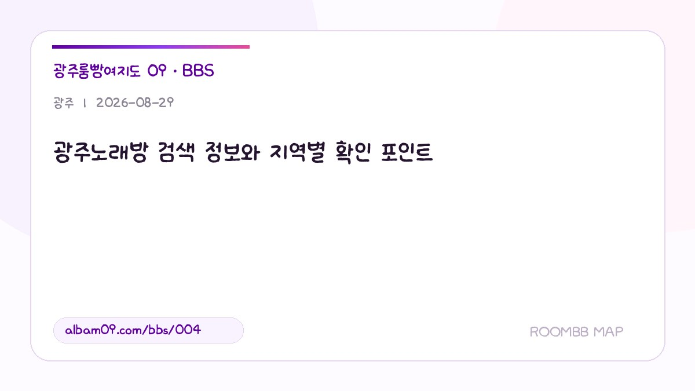

광주노래방 검색 정보와 지역별 확인 포인트

붙여 쓴 광주노래방 키워드로 검색하더라도 서구·북구·광산구 업소가 한꺼번에 섞이므로 상세 주소가 기준이 됩니다.
검색어 표기보다 주소를 우선하는 경우
띄어 쓴 ‘광주 노래방’과 붙여 쓴 ‘광주노래방’은 검색 표현이 달라도 실제 주소가 없는 업소가 새로 생기는 것은 아닙니다. 이 글에서는 같은 상호가 여러 지역 목록에 있는지, 등록된 동·층수 정보를 확인할 수 있는지를 우선해서 살핍니다.
광주 전역 등록 업소를 실제 정보로 비교하기
- 플렉스멤버쉽 — 등록 위치: 상무지구. 운영 표기: 19:00부터 · 마감시간 문의. 상무지구 중심 업소 목록에 올라 있으며 저녁 7시부터라고 등록되어 있습니다. 업소 상세 확인
- 여우노래홀 — 등록 위치: 광주광역시 북구 경양로 138 (유동101-1 ,2층). 운영 표기: 방문 전 문의. 북구 경양로 138, 유동 101-1의 2층으로 안내됩니다. 업소 상세 확인
- 여대생 — 등록 위치: 광산구 첨단지구. 운영 표기: 18:00-06:00. 광산구 첨단지구로 등록되고 18시~06시 운영 시간이 표시됩니다. 업소 상세 확인
이 글에서 확인할 세 가지 질문
- 원하는 상권과 행정동이 일치하는가?
- 상호·운영정보가 최신인지 확인할 수 있는가?
- 유사 상호를 주소로 구분했는가?